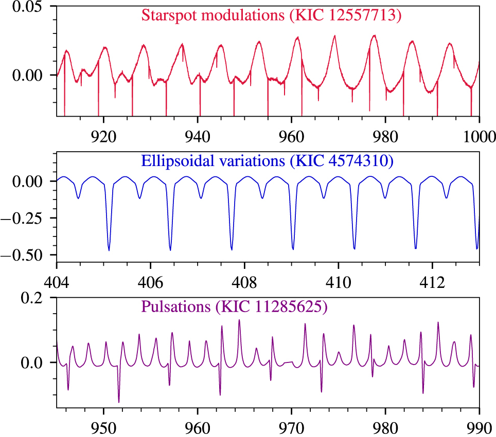

Unlike the Sun, at least half of stars in the Milky Way Galaxy have at least one companion star. If the companions are far apart, the stars will evolve through their life cycles
more or less independently. However, if the companions are close together, they can influence each other's evolution, sometimes with dramatic consequences such as supernovae.
Eclipsing binaries are a special type of system in which the stars pass in front of one another during the course of their orbit, much in the way the Moon passes in front of the Sun during a solar eclipse. Eclipsing binaries serve as natural laboratories. By observing them astronomers can measure the masses and diameters of the stars, knowledge of which is as crucial to astronomy as sequencing DNA is to biology.
This paper studied the tidal interaction of eclipsing binaries. Stars can cause tides in their companions similar to the ocean tides on Earth caused by the Moon. In fact, the Moon is tidally locked
to the Earth because it always keeps the same side facing the Earth as it orbits. Likewise, the closest binary systems become tidally locked to each other. In order to understand tidal locking, we examined Kepler space telescope observations of eclipsing binaries, looking for stars with spots that we could use to measure their rotation rates. You can read about the remarkable Kepler mission and the observation of starspots in this summary of a paper about the GJ 1245ABC system, which is not an eclipsing binary.
The difficulty of the project was that there are many sources of brightness variations that are not due to starspots and that would contaminate a study of tidal locking. There are also many eclipsing binaries that don't vary significantly in brightness other than the eclipses themselves. You can see three representative binaries in the figure below. The top figure shows starspot variations, the middle shows the effects of tidal distortions, and the bottom shows pulsations due to expansion and contraction of the stars. In all three cases the sharp dips in brightness are due to eclipses.
We carefully inspected and classified over 2,000 eclipsing binaries and found about 800 systems with well defined starspot signals. This unprecedentedly large sample allowed for a detailed statistical analysis of tidal interaction. Many of the results agreed with theoretical expectations, however we discovered a group of binaries that rotate slightly slower than would be expected if they were tidally locked. One possible explanation is that different regions of the stars rotate at different rates, as occurs on the Sun. Alternatively, it could be due to changes in the orbits as the stars evolve. As a whole, the results increase our understanding of how close binary stars interact and their possible effects on the Galaxy.
You can read the full paper, Tidal Synchronization and Differential Rotation of Kepler Eclipsing Binaries, on the Astronomical Journal website.
This research was done in collaboration with Karl Vyhmeister, Suzanne L. Hawley, Jamel Adilia, Andrea Chen, James R. A. Davenport, Mario Jurić, Michael Puig-Holzman, and Kolby L. Weisenburger. The paper has been cited by 41 peer-reviewed articles as of September 2021.